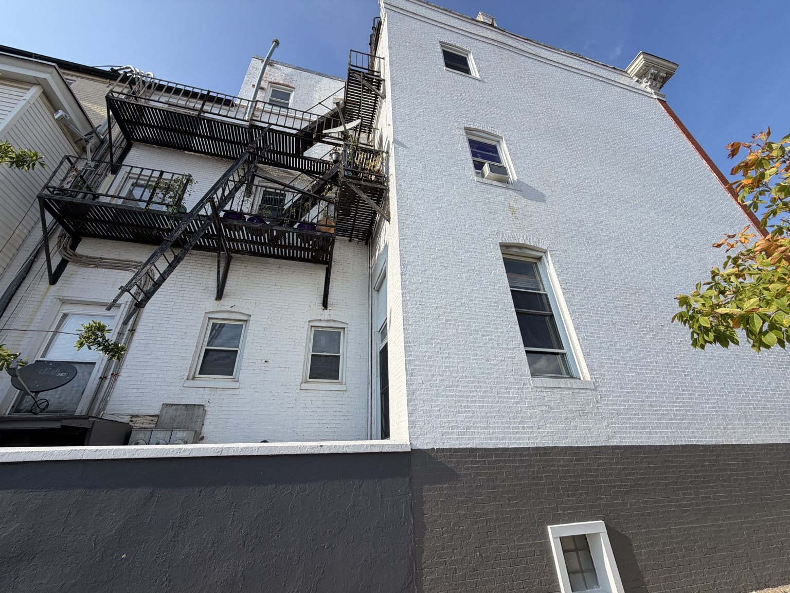
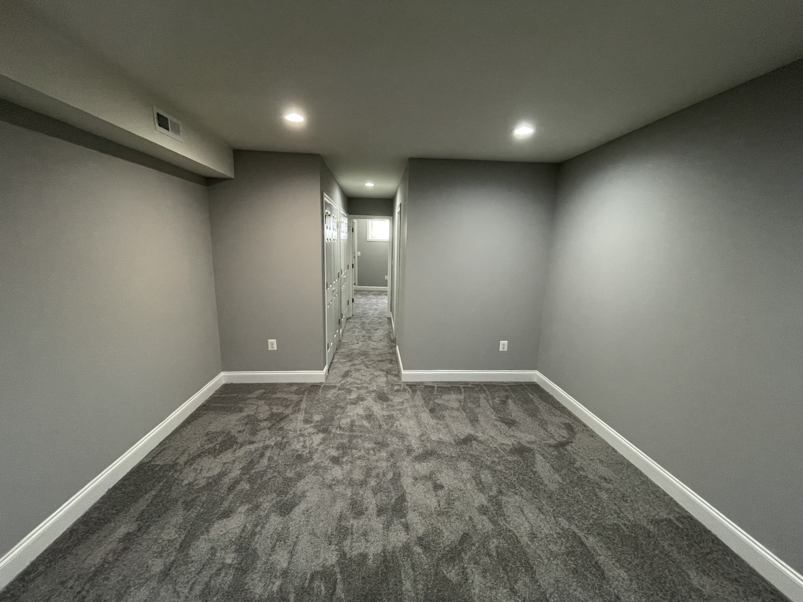
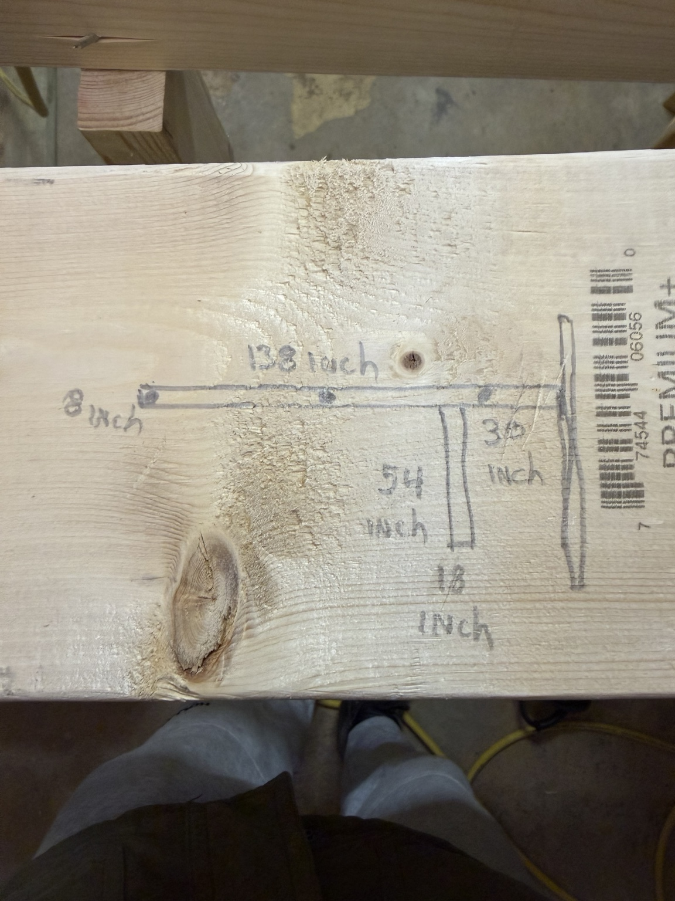
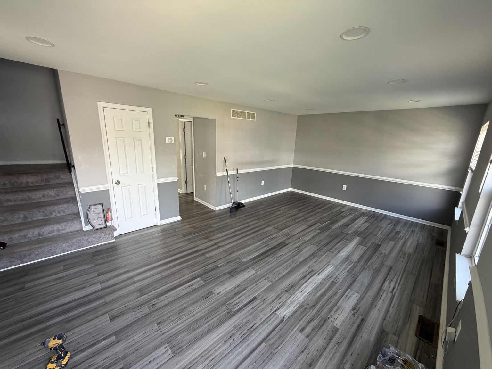
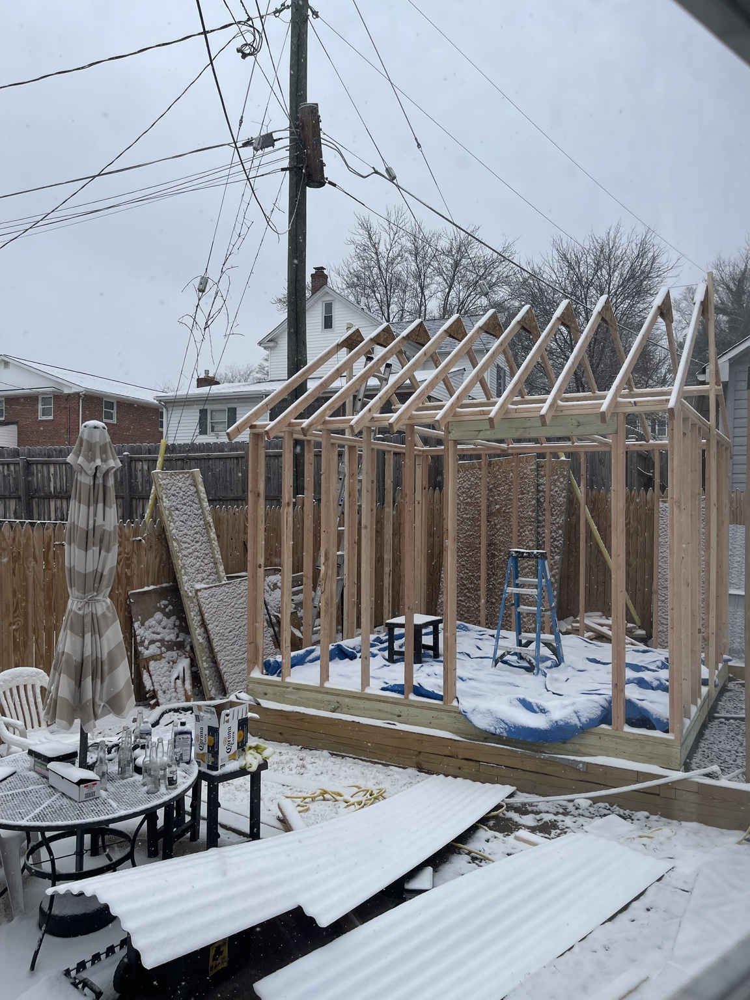
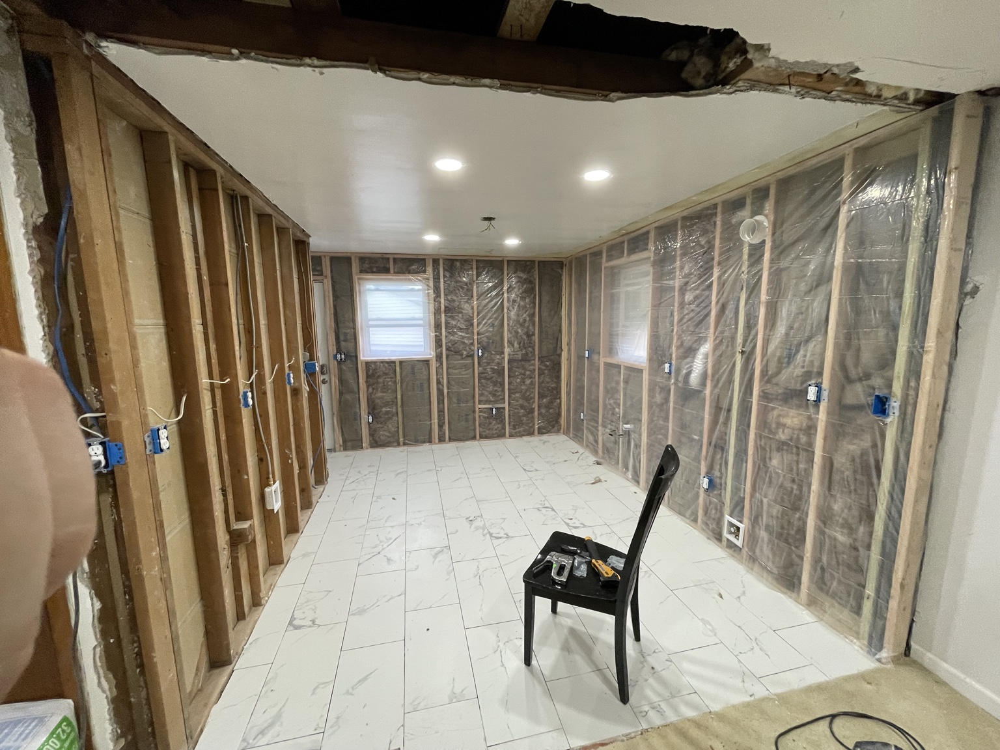
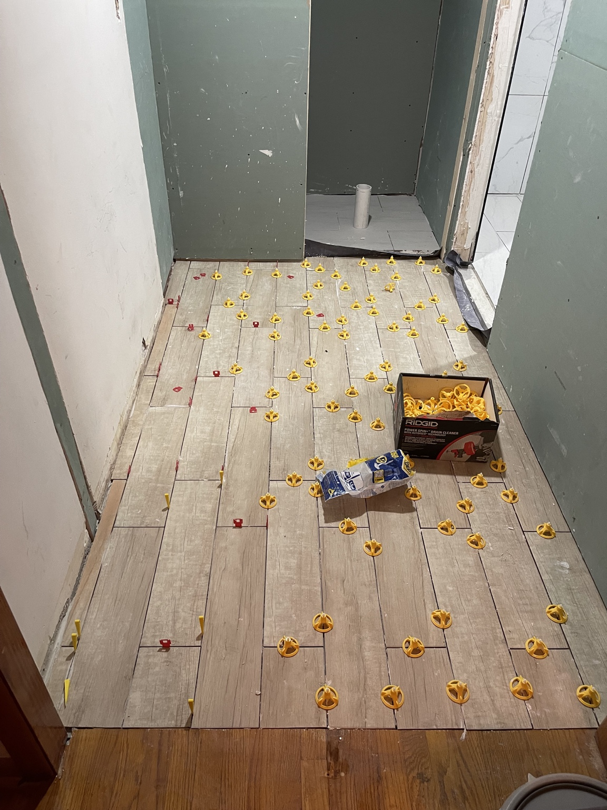
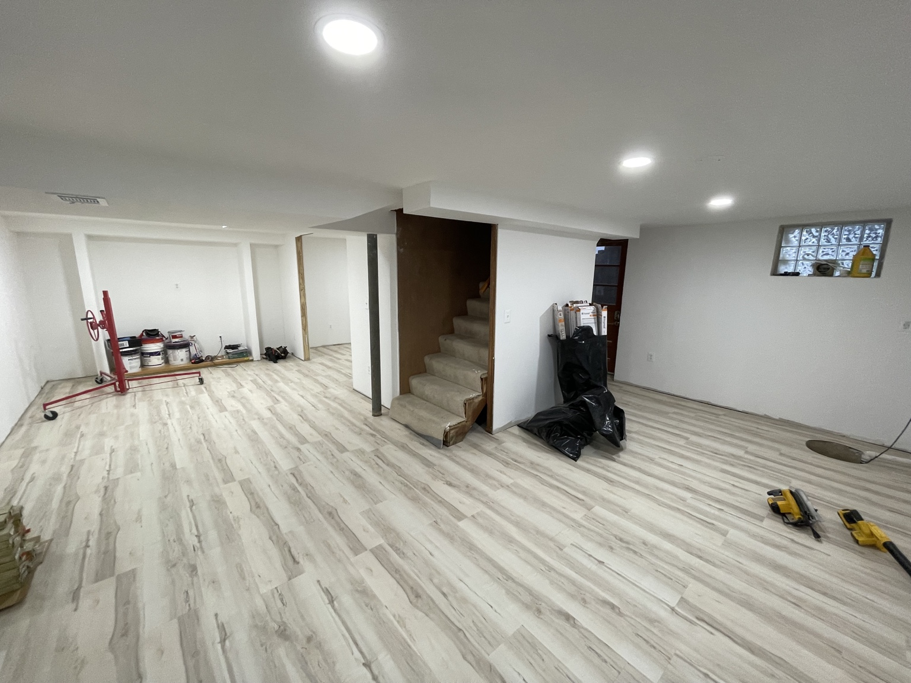

PROJECTS
REAL WORK.
REAL RESULTS.
Real LA Core projects — from structural rehabilitation and rough construction through the final finish.

FEATURED CASE STUDY
Francis Street
A whole-house rehabilitation involving structural framing, roof-leak restoration, subfloor replacement, flooring, electrical improvements, a new shaker-cabinet kitchen, masonry, exterior work and complete finish-out.
View Full Project
EXTERIOR CASE STUDY
Maryland Avenue
Two-building exterior painting with high-access lift work, cornice and trim detailing, rear courtyard elevations, fire escapes, metalwork and Cheyenne Red deck finishes.
View Full Project
RENOVATION CASE STUDY
North Kenwood Avenue
Corrective subfloor repairs, LVP flooring, exterior stair rebuilding, gate repair, interior finish work and a complete basement transformation with carpet, paint, trim and updated lighting.
View Full Project
RENOVATION CASE STUDY
Bayonne Avenue
Extensive renovation documented through demolition, framing and rough work, custom carpentry, bathroom preparation, exterior reconstruction and ongoing finish work.
View Full Project
RENOVATION CASE STUDY
Hartford Square Drive
Comprehensive residential renovation featuring a brand-new roof, drywall and wall repairs, new LVP flooring, carpeted stairs, bathroom and laundry improvements, interior painting, trim and finish work, kitchen improvements and exterior repairs.
View Full Project
GROUND-UP BUILD CASE STUDY
Custom 12×12 Shed Build
Custom backyard shed built from the ground up on a challenging uneven site, including a leveled gravel base, pressure-treated foundation, floor system, wall and roof framing, exterior siding and corrugated roofing.
View Full ProjectBEHIND THE FINISH
Built from the inside out.
Finished rooms are only part of the story. These are real LA Core jobsite photos showing framing, drywall, tile, flooring and finish work in progress.




START YOUR PROJECT
Have a property that needs work?
Tell us what you're working with and what you want it to become.
Request an Estimate